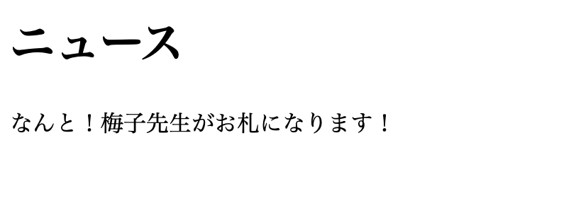
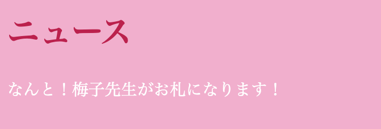

CSSとは、Webページのデザインやレイアウトを組み立てるための言語で、
簡単にいうと、コンピューターが理解できるように、HTMLで指定した文章構造を装飾をするための言葉です。
HTMLは文章の構造を指定することはできますが、文字の大きさを変えたり、背景に色をつけたりすることはできません。
そこで、Webページの装飾担当が必要！ということで、CSSの登場です。
例えば、このHTMLで書かれた文章を装飾することにしましょう。
<h1>ニュース</h1>
<p>なんと！梅子先生がお札になります！</p>
このコードを、そのままWebページとして表示すると、こんな感じになります。
うーん、悪くないけど、、地味ですよね。ここで装飾担当に注文してみましょう！
「じゃあ、背景は薄いピンクで、文字は白！あ、やっぱり見出しだけ濃いピンクにして！」
これをCSSで書くとこんな感じになります。
body{color: #fff; /*文字色を白*/
background-color: #f5bfd6; /*背景を薄いピンク*/}
h1{color: #c9375f; /*見出しを濃いピンク*/}
これを実行してみると...
わぁー！だいぶ華やかになりましたね！
こんな感じで、HTMLにCSSを反映させることによって、綺麗なデザインのページを作ることができます！
HTMLとCSSはどちらもWebページを形成するものですが、役割が違います。
彼らはいつも一緒にいるので、「HTML/CSS」と表示されることが多いです。つまり、
Webページ = HTML（構造）＋ CSS（装飾）
ってことです！HTMLとCSSは相棒なんですね！
CSSを使うことによって、より見やすいページを作成することができます。 ここでは色の変更のみ紹介しましたが、他にも文字の大きさを変えたり、枠で囲ったり...他の様々な装飾の仕方についてはテクニックの方で紹介しています。 ぜひ参考にしてくださいね！